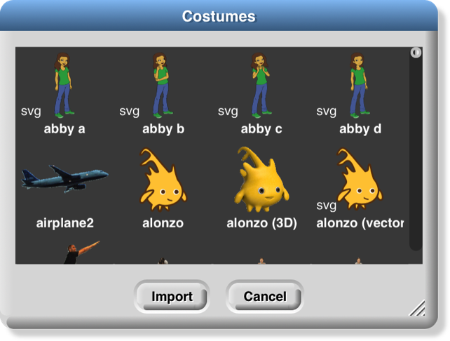
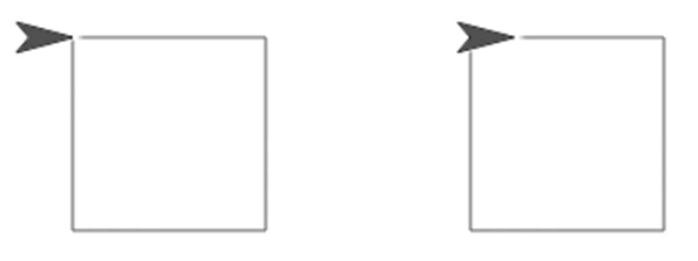

13 User Interface Elements
In this chapter we describe in detail the various buttons, menus, and other clickable elements of the Snap! user interface. Here again is the map of the Snap! window:

Tool Bar Features
Holding down the Shift key while clicking on any of the menu buttons gives access to an extended menu with options, shown in red, that are experimental or for use by the developers. We’re not listing those extra options here because they change frequently and you shouldn’t rely on them. But they’re not secrets .
The Snap! Logo Menu
The Snap! logo at the left end of the tool bar is clickable. It shows a menu of options about Snap! itself:

The About option displays information about Snap! itself, including version numbers for the source modules, the implementors, and the license (AGPL : you can do anything with it except create proprietary versions, basically).
The Reference manual option downloads a copy of the latest revision of this manual in PDF format.
The Snap! website option opens a browser window pointing to snap.berkeley.edu , the web site for Snap!.
The Download source option opens a browser window displaying the Github repository of the source files for Snap!. At the bottom of the page are links to download the latest official release. Or you can navigate around the site to find the current development version. You can read the code to learn how Snap! is implemented, host a copy on your own computer (this is one way to keep working while on an airplane), or make a modified version with customized features. (However, access to cloud accounts is limited to the official version hosted at Berkeley.)
The File Menu
The  file icon shows a menu mostly about saving and loading projects. You may not see all these options, if you don’t have multiple sprites, scenes, custom blocks, and custom categories.
file icon shows a menu mostly about saving and loading projects. You may not see all these options, if you don’t have multiple sprites, scenes, custom blocks, and custom categories.
The Notes option opens a window in which you can type notes about the project: How to use it, what it does, whose project you modified to create it, if any, what other sources of ideas you used, or any other information about the project. This text is saved with the project, and is useful if you share it with other users.
The New option starts a new, empty project. Any project you were working on before disappears, so you are asked to confirm that this is really what you want. (It disappears only from the current working Snap! window; you should save the current project, if you want to keep it, before using New.)
Note the ^N at the end of the line. This indicates that you can type control-N as a shortcut for this menu item. Alas, this is not the case in every browser. Some Mac browsers require command-N (⌘N) instead, while others open a new browser window instead of a new project. You’ll have to experiment. In general, the keyboard shortcuts in Snap! are the standard ones you expect in other software.
The Open… option shows a project open dialog box in which you can choose a project to open:

In this dialog, the three large buttons at the left select a source of projects: Cloud means your Snap! account’s cloud storage. Examples means a collection of sample projects we provide. Computer is for projects saved on your own computer; when you click it, this dialog is replaced with your computer’s system dialog for opening files. The text box to the right of those buttons is an alphabetical listing of projects from that source; selecting a project by clicking shows its thumbnail (a picture of the stage when it was saved) and its project notes at the right.
The search bar at the top can be used to find a project by name or text in the project notes. So in this example:

I was looking for my ice cream projects and typed “crea” in the search bar, then wondered why “ferris” matched. But then when I clicked on ferris I saw this:

My search matched the word “recreate” in the project notes.
The six buttons at the bottom select an action to perform on the selected project. In the top row, Recover looks in your cloud account for older versions of the chosen project. If your project is damaged, don’t keep saving broken versions! Use Recover first thing. You will see a list of saved versions; choose one to open it. Typically, you’ll see the most recent version before the last save, and the newest version saved before today. Then come buttons Share/Unshare and Publish/Unpublish. The labelling of the buttons depends on your project’s publication status. If a project is neither shared nor published (the ones in lightface type in the project list), it is private and nobody can see it except you, its owner. If it is shared (boldface in the project list), then when you open it you’ll see a URL like this one:
https://snap.berkeley.edu/snapsource/snap.html#present:Username=bh&ProjectName=count%20change
but with your username and project name. (“%20” in the project name represents a space, which can’t be part of a URL.) Anyone who knows this URL can see your project. Finally, if your project is published (bold italic in the list), then your project is shown on the Snap! web site for all the world to see. (In all of these cases, you are the only one who can write to (save) your project.) If another user saves it, a separate copy will be saved in that user’s account. Projects remember the history of who created the original version and any other “remix” versions along the way.
In the second row, the first button, Open, loads the project into Snap! and closes the dialog box. The next button (if Cloud is the source) is Delete, and if clicked it deletes the selected project. Finally, the Cancel button closes the dialog box without opening a project. (It does not undo any sharing, unsharing, or deletion you’ve done.)
Back to the File menu, the Save menu option saves the project to the same source and same name that was used when opening the project. (If you opened another user’s shared project or an example project, the project will be saved to your own cloud account. You must be logged in to save to the cloud.)
The Save as… menu option opens a dialog box in which you can specify where to save the project:

This is much like the Open dialog, except for the horizontal text box at the top, into which you type a name for the project. You can also publish, unpublish, share, unshare, and delete projects from here. There is no Recover button.
The Import… menu option is for bringing some external resource into the current project, or it can load an entirely separate project, from your local disk. You can import costumes (any picture format that your browser supports), sounds (again, any format supported by your browser), and block libraries or sprites (XML format, previously exported from Snap! itself). Imported costumes and sounds will belong to the currently selected sprite; imported blocks are global (for all sprites). Using the Import option is equivalent to dragging the file from your desktop onto the Snap! window.
Depending on your browser, the Export project… option either directly saves to your disk or opens a new browser tab containing your complete project in XML notation (a plain text format). You can then use the browser’s Save feature to save the project as an XML file, which should be named something.xml so that Snap! will recognize it as a project when you later drag it onto a Snap! window. This is an alternative to saving the project to your cloud account: keeping it on your own computer. It is equivalent to choosing Computer from the Save dialog described earlier.
The Export summary… option creates a web page, in HTML, with all of the information about your project: its name, its project notes, a picture of what’s on its stage, definitions of global blocks, and then per-sprite information: name, wardrobe (list of costumes), and local variables and block definitions. The page can be converted to PDF by the browser; it’s intended to meet the documentation requirements of the Advanced Placement Computer Science Principles create task.
The Export blocks… option is used to create a block library . It presents a list of all the global (for all sprites) blocks in your project, and lets you select which to export. It then opens a browser tab with those blocks in XML format, or stores directly to your local disk, as with the Export project option. Block libraries can be imported with the Import option or by dragging the file onto the Snap! window. This option is shown only if you have defined custom blocks.
The Unused blocks… option presents a listing of all the global custom blocks in your project that aren’t used anywhere, and offers to delete them. As with Export blocks, you can choose a subset to delete with checkboxes. This option is shown only if you have defined custom blocks.
The Hide blocks… option shows all blocks, including primitives, with checkboxes. This option does not remove any blocks from your project, but it does hide selected block in your palette. The purpose of the option is to allow teachers to present students with a simplified Snap! with some features effectively removed. The hiddenness of primitives is saved with each project, so students can load a shared project and see just the desired blocks. But users can always unhide blocks by choosing this option and unclicking all the checkboxes. (Right-click in the background of the dialog box to get a menu from which you can check all boxes or uncheck all boxes.)
The New category… option allows you to add your own categories to the palette. It opens a dialog box in which you specify a name and a color for the category. (A lighter version of the same color will be used for the zebra coloring feature.)
The Remove a category… option appears only if you’ve created custom categories. It opens a very small, easy-to-miss menu of category names just under the file icon in the menu bar. If you remove a category that has blocks in it, all those blocks are also removed.
The next group of options concern the scenes feature, new in Snap! 7.0. A scene is a complete project, with its own stage, sprites, and code, but several can be merged into one project, using the  block to bring another scene onscreen. The Scenes… option presents a menu of all the scenes in your project, where the File menu was before you clicked it. The New scene option creates a new, empty scene, which you can rename as you like from its context menu. Add scene… is like Import… but for scenes. (A complete project can be imported as a scene into another project, so you have to specify that you’re importing the project as a scene rather than replacing the current project.)
block to bring another scene onscreen. The Scenes… option presents a menu of all the scenes in your project, where the File menu was before you clicked it. The New scene option creates a new, empty scene, which you can rename as you like from its context menu. Add scene… is like Import… but for scenes. (A complete project can be imported as a scene into another project, so you have to specify that you’re importing the project as a scene rather than replacing the current project.)
The Libraries… option presents a menu of useful, optional block libraries:

The library menu is divided into five broad categories. The first is, broadly, utilities: blocks that might well be primitives. They might be useful in all kinds of projects.
The second category is blocks related to media computation: ones that help in dealing with costumes and sounds (a/k/a Jens libraries). There is some overlap with “big data” libraries, for dealing with large lists of lists.
The third category is, roughly, specific to non-media applications (a/k/a Brian libraries). Three of them are imports from other programming languages: words and sentences from Logo, array functions from APL, and streams from Scheme. Most of the others are to meet the needs of the BJC curriculum.
The fourth category is major packages provided by users.
The fifth category provides support for hardware devices such as robots, through general interfaces, replacing specific hardware libraries in versions before 7.0.
When you click on the one-line description of a library, you are shown the actual blocks in the library and a longer explanation of its purpose. You can browse the libraries to find one that will satisfy your needs. The libraries are described in detail in Section I.H, page 25.
The Costumes… option opens a browser into the costume library:

You can import a single costume by clicking it and then clicking the Import button. Alternatively, you can import more than one costume by double-clicking each one, and then clicking Cancel when done. Notice that some costumes are tagged with “svg” in this picture; those are vector-format costumes that are not (yet) editable within Snap!.
If you have the stage selected in the sprite corral, rather than a sprite, the Costumes… option changes to a Backgrounds… option , with different choices in the browser:

The costume and background libraries include both bitmap (go jagged if enlarged) and vector (enlarge smoothly) images. Thanks to Scratch 2.0/3.0 for most of these images! Some older browsers refuse to import a vector image, but instead convert it to bitmap.
The Sounds… option opens the third kind of media browser:

The Play buttons can be used to preview the sounds.
Finally, the Undelete sprites… option appears only if you have deleted a sprite; it allows you to recover a sprite that was deleted by accident (perhaps intending to delete only a costume).
The Cloud Menu
The cloud icon 
 shows a menu of options relating to your Snap! cloud account. If you are not logged in, you see the outline icon and get this menu:
shows a menu of options relating to your Snap! cloud account. If you are not logged in, you see the outline icon and get this menu:

Choose Login… if you have a Snap! account and remember your password. Choose Signup… if you don’t have an account. Choose Reset Password… if you’ve forgotten your password or just want to change it. You will then get an email, at the address you gave when you created your account, with a new temporary password. Use that password to log in, then you can choose your own password, as shown below. Choose Resend Verification Email… if you have just created a Snap! account but can’t find the email we sent you with the link to verify that it’s really your email. (If you still can’t find it, check your spam folder. If you are using a school email address, your school may block incoming email from outside the school.) The Open in Community Site option appears only if you have a project open; it takes you to the community site page about that project.
If you are already logged in, you’ll see the solid icon and get this menu:

Logout is obvious, but has the additional benefit of showing you who’s logged in. Change password… will ask for your old password (the temporary one if you’re resetting your password) and the new password you want, entered twice because it doesn’t echo. Open in Community Site is the same as above.
The Settings Menu
The settings icon  shows a menu of Snap! options, either for the current project or for you permanently, depending on the option:
shows a menu of Snap! options, either for the current project or for you permanently, depending on the option:

The Language… option lets you see the Snap! user interface (blocks and messages) in a language other than English. (Note: Translations have been provided by Snap! users. If your native language is missing, send us an email!)
The Zoom blocks… option lets you change the size of blocks, both in the palettes and in scripts. The standard size is 1.0 units. The main purpose of this option is to let you take very high-resolution pictures of scripts for use on posters. It can also be used to improve readability when projecting onto a screen while lecturing, but bear in mind that it doesn’t make the palette or script areas any wider, so your computer’s command-option-+ feature may be more practical. Note that a zoom of 2 is gigantic! Don’t even try 10.
The Fade blocks… option opens a dialog in which you can change the appearance of blocks:

Mostly this is a propaganda aid to use on people who think that text languages are somehow better or more grown up than block languages, but some people do prefer less saturated block colors. You can use the pulldown menu for preselected fadings, use the slider to see the result as you change the fading amount, or type a number into the text box once you’ve determined your favorite value.
The Stage size… option lets you set the size of the full-size stage in pixels. If the stage is in half-size or double-size (presentation mode), the stage size values don’t change; they always reflect the full-size stage.
The Microphone resolution… option sets the buffer size used by the microphone block in Settings. “Resolution” is an accurate name if you are getting frequency domain samples; the more samples, the narrower the range of frequencies in each sample. In the time domain, the buffer size determines the length of time over which samples are collected.
The remaining options let you turn various features on and off. There are three groups of checkboxes. The first is for temporary settings not saved in your project nor in your user preferences.
The JavaScript extensions option enables the use of the JavaScript function block . Because malicious projects could use JavaScript to collect private information about you, or to delete or modify your saved projects, you must enable JavaScript each time you load a project that uses it.
The Extension blocks option adds two blocks to the palette:


These blocks provide assorted capabilities to official libraries that were formerly implemented with the JavaScript function block. This allows these libraries to run without requiring the JavaScript extensions option. Details are subject to change.
Input sliders provides an alternate way to put values in numeric input slots; if you click in such a slot, a slider appears that you can control with the mouse:

The range of the slider will be from 25 less than the input’s current value to 25 more than the current value. If you want to make a bigger change than that, you can slide the slider all the way to either end, then click on the input slot again, getting a new slider with a new center point. But you won’t want to use this technique to change the input value from 10 to 1000, and it doesn’t work at all for non-integer input ranges. This feature was implemented because software keyboard input on phones and tablets didn’t work at all in the beginning, and still doesn’t work perfectly on Android devices, so sliders provide a workaround. It has since found another use in providing “lively” response to input changes; if Input sliders is checked, reopening the settings menu will show an additional option called Execute on slider change . If this option is also checked, then changing a slider in the scripting area automatically runs the script in which that input appears. The project live-tree in the Examples collection shows how this can be used; it features a fractal tree custom block with several inputs, and you can see how each input affects the picture by moving a slider.

Turbo mode makes many projects run much faster, at the cost of not keeping the stage display up to date. (Snap! ordinarily spends most of its time drawing sprites and updating variable watchers, rather than actually carrying out the instructions in your scripts.) So turbo mode isn’t a good idea for a project with glide block s or one in which the user interacts with animated characters, but it’s great for drawing a complicated fractal, or computing the first million digits of 𝜋, so that you don’t need to see anything until the final result. While in turbo mode, the button that normally shows a green flag instead shows a green lightning bolt. (But when ⚑ clicked hat blocks still activate when the button is clicked.)
Visible stepping enables the slowed-down script evaluation described in Chapter I. Checking this option is equivalent to clicking the footprint button above the scripting area. You don’t want this on except when you’re actively debugging, because even the fastest setting of the slider is still slowed a lot.
Log pen vectors tells Snap! to remember lines drawn by sprites as exact vectors, rather than remember only the pixels that the drawing leaves on the stage. This remembered vector picture can be used in two ways: First, right-clicking on a pen trails block gives an option to relabel it into a pen vectors block which, when run, reports the logged lines as a vector (svg) costume. Second, right-clicking on the stage when there are logged vectors shows an extra option, svg…, that exports a picture of the stage in vector format. Only lines are logged, not color regions made with the fill block.
The next group of four are user preference options, preserved when you load a new project. Long form input dialog , if checked, means that whenever a custom block input name is created or edited, you immediately see the version of the input name dialog that includes the type options, default value setting, etc., instead of the short form with just the name and the choice between input name and title text. The default (unchecked) setting is definitely best for beginners, but more experienced Snap! programmers may find it more convenient always to see the long form.
Plain prototype labels eliminates the plus signs between words in the Block Editor prototype block. This makes it harder to add an input to a custom block; you have to hover the mouse where the plus sign would have been, until a single plus sign appears temporarily for you to click on. It’s intended for people making pictures of scripts in the block editor for use in documentation, such as this manual. You probably won’t need it otherwise.
Clicking sound causes a really annoying sound effect whenever one block snaps next to another in a script. Certain very young children, and our colleague Dan Garcia, like this, but if you are such a child you should bear in mind that driving your parents or teachers crazy will result in you not being allowed to use Snap!. It might, however, be useful for visually impaired users.
Flat design changes the “skin” of the Snap! window to a really hideous design with white and pale-grey background, rectangular rather than rounded buttons, and monochrome blocks (rather than the shaded, somewhat 3D-looking normal blocks). The monochrome blocks are the reason for the “flat” in the name of this option. The only thing to be said for this option is that, because of the white background, it may blend in better with the rest of a web page when a Snap! project is run in a frame in a larger page. (I confess I used it to make the picture of blocks faded all the way to just text two pages ago, though.)
The final group of settings change the way Snap! interprets your program; they are saved with the project, so anyone who runs your project will experience the same behavior. Thread safe scripts changes the way Snap! responds when an event (clicking the green flag, say) starts a script, and then, while the script is still running, the same event happens again. Ordinarily, the running process stops where it is, ignoring the remaining commands in the script, and the entire script starts again from the top. This behavior is inherited from Scratch, and some converted Scratch projects depend on it; that’s why it’s the default. It’s also sometimes the right thing, especially in projects that play music in response to mouse clicks or keystrokes. If a note is still playing but you ask for another one, you want the new one to start right then, not later after the old process finishes. But if your script makes several changes to a database and is interrupted in the middle, the result may be that the database is inconsistent. When you select Thread safe scripts, the same event happening again in the middle of running a script is simply ignored. (This is arguably still not the right thing; the event should be remembered and the script run again as soon as it finishes. We’ll probably get around to adding that choice eventually.) Keyboard events (when __ key pressed) are always thread-safe.
Flat line ends affects the drawing of thick lines (large pen width). Usually the ends are rounded, which looks best when turning corners. With this option selected, the ends are flat. It’s useful for drawing a brick wall or a filled rectangle.
Codification support enables a feature that can translate a Snap! project to a text-based (rather than block-based) programming language. The feature doesn’t know about any particular other language; instead, you can provide a translation for each primitive block using these special blocks :

Using these primitive blocks, you can build a block library to translate into any programming language. Watch for such libraries to be added to our library collection (or contribute one). To see some examples, open the project “Codification” in the Examples project list. Edit the blocks map to Smalltalk, map to JavaScript, etc., to see examples of how to provide translations for blocks.


The Single palette option puts all blocks, regardless of category, into a single palette. It’s intended mainly for use by curriculum developers building Parsons problems : projects in which only a small set of blocks are provided, and the task is to arrange those blocks to achieve a set goal. In that application, this option is combined with the hiding of almost all primitive blocks. (See page 119.) When Single palette is turned on, two additional options (initially on) appear in the settings menu; the Show categories option controls the appearance of the palette category names such as  and
and  , while the Show buttons option controls the appearance of the
, while the Show buttons option controls the appearance of the  and
and  buttons in the palette.
buttons in the palette.
The HSL pen color model option changes the set pen, change pen, and pen blocks to provide menu options hue, saturation, and lightness instead of hue, saturation, and brightness (a/k/a value). Note: the name “saturation” means something different in HSL from in HSV! See Appendix A for all the information you need about colors.
The Disable click-to-run option tells Snap! to ignore user mouse clicks on blocks and scripts if it would ordinarily run the block or script. (Right-clicking and dragging still work, and so does clicking in an input slot to edit it.) This is another Parsons problem feature; the idea is that there will be buttons displayed that run code only in teacher-approved ways. But kids can uncheck the checkbox. ☺︎
Visible Stepping Controls
After the menu buttons you’ll see the project name. After that comes the footprint button  used to turn on visible stepping and, when it’s on, the slider to control the speed of stepping.
used to turn on visible stepping and, when it’s on, the slider to control the speed of stepping.
Stage Resizing Buttons
Still in the tool bar, but above the left edge of the stage, are two buttons that change the size of the stage. The first is the shrink/grow button . Normally it looks like this:  Clicking the button displays the stage at half-normal size horizontally and vertically (so it takes up ¼ of its usual area). When the stage is half size the button looks like this:
Clicking the button displays the stage at half-normal size horizontally and vertically (so it takes up ¼ of its usual area). When the stage is half size the button looks like this:  and clicking it returns the stage to normal size. The main reason you’d want a half size stage is during the development process, when you’re assembling scripts with wide input expressions and the normal scripting area isn’t wide enough to show the complete script. You’d typically then switch back to normal size to try out the project. The next presentation mode button normally looks like this:
and clicking it returns the stage to normal size. The main reason you’d want a half size stage is during the development process, when you’re assembling scripts with wide input expressions and the normal scripting area isn’t wide enough to show the complete script. You’d typically then switch back to normal size to try out the project. The next presentation mode button normally looks like this:  Clicking the button makes the stage double size in both dimensions and eliminates most of the other user interface elements (the palette, the scripting area, the sprite corral, and most of the tool bar). When you open a shared project using a link someone has sent you, the project starts in presentation mode. While in presentation mode, the button looks like this:
Clicking the button makes the stage double size in both dimensions and eliminates most of the other user interface elements (the palette, the scripting area, the sprite corral, and most of the tool bar). When you open a shared project using a link someone has sent you, the project starts in presentation mode. While in presentation mode, the button looks like this:  Clicking it returns to normal (project development) mode.
Clicking it returns to normal (project development) mode.
Project Control Buttons
Above the right edge of the stage are three buttons that control the running of the project.
Technically, the green flag  is no more a project control than anything else that can trigger a hat block: typing on the keyboard or clicking on a sprite. But it’s a convention that clicking the flag should start the action of the project from the beginning. It’s only a convention; some projects have no flag-controlled scripts at all, but respond to keyboard controls instead. Clicking the green flag also deletes temporary clones.
is no more a project control than anything else that can trigger a hat block: typing on the keyboard or clicking on a sprite. But it’s a convention that clicking the flag should start the action of the project from the beginning. It’s only a convention; some projects have no flag-controlled scripts at all, but respond to keyboard controls instead. Clicking the green flag also deletes temporary clones.
Whenever any script is running (not necessarily in the current sprite), the green flag is lit:  .
.
Shift-clicking the button enters Turbo mode, and the button then looks like a lightning bolt: . Shift-clicking again turns Turbo mode off.
Scripts can simulate clicking the green flag by broadcasting the special message  .
.
The pause button  suspends running all scripts. If clicked while scripts are running, the button changes shape to become a play button:
suspends running all scripts. If clicked while scripts are running, the button changes shape to become a play button:  Clicking it while in this form resumes the suspended scripts. There is also a pause all block in the Control palette that can be inserted in a script to suspend all scripts; this provides the essence of a breakpoint debugging capability. The use of the pause button is slightly different in visible stepping mode, described in Chapter I.
Clicking it while in this form resumes the suspended scripts. There is also a pause all block in the Control palette that can be inserted in a script to suspend all scripts; this provides the essence of a breakpoint debugging capability. The use of the pause button is slightly different in visible stepping mode, described in Chapter I.
The stop button  stops all scripts, like the stop all block . It does not prevent a script from starting again in response to a click or keystroke; the user interface is always active. There is one exception: generic when blocks
stops all scripts, like the stop all block . It does not prevent a script from starting again in response to a click or keystroke; the user interface is always active. There is one exception: generic when blocks  will not fire after a stop until some non-generic event starts a script. The stop button also deletes all temporary clones.
will not fire after a stop until some non-generic event starts a script. The stop button also deletes all temporary clones.
The Palette Area
At the top of the palette area are the eight buttons that select which palette (which block category) is shown: Motion, Looks, Sound, Pen, Control, Sensing, Operators, and Variables (which also includes the List and Other blocks). There are no menus behind these buttons.
Buttons in the Palette
Under the eight palette selector buttons, at the top of the actual palette, are two semi-transparent buttons. The first is the search button  , which is equivalent to typing control-F: It replaces the palette with a search bar into which you can type part of the title text of the block you’re trying to find. To leave this search mode, click one of the eight palette selectors, or type the Escape key.
, which is equivalent to typing control-F: It replaces the palette with a search bar into which you can type part of the title text of the block you’re trying to find. To leave this search mode, click one of the eight palette selectors, or type the Escape key.
The other button  is equivalent to the “Make a block” button , except that the dialog window that it opens has the current palette (color) preselected.
is equivalent to the “Make a block” button , except that the dialog window that it opens has the current palette (color) preselected.
Context Menus for Palette Blocks
Most elements of the Snap! display can be control-clicked/right-clicked to show a context menu , with items relevant to that element. If you control-click/right-click a primitive block in the palette, you see this menu:

The help… option displays a box with documentation about the block. Here’s an example:

If you control-click/right-click a custom (user-defined) block in the palette, you see this menu:

The help… option for a custom block displays the comment, if any, attached to the custom block’s hat block in the Block Editor. Here is an example of a block with a comment and its help display:

If the help text includes a URL, it is clickable and will open the page in a new tab.
The delete block definition… option asks for confirmation, then deletes the custom block and removes it from any scripts in which it appears. (The result of this removal may not leave a sensible script; it’s best to find and correct such scripts before deleting a block.) Note that there is no option to hide a custom block; this can be done in the Block Editor by right-clicking on the hat block.
The duplicate block definition… option makes a copy of the block and opens that copy in the Block Editor. Since you can’t have two custom blocks with the same title text and input types, the copy is created with “(2)” (or a higher number if necessary) at the end of the block prototype.
The export block definition… option writes a file in your browser’s downloads directory containing the definition of this block and any other custom blocks that this block invokes, directly or indirectly. So the resulting file can be loaded later without the risk of red Undefined! blocks because of missing dependencies.
The edit… option opens a Block Editor with the definition of the custom block.
Context Menu for the Palette Background
Right-click/control-click on the grey background of the palette area shows this menu:

The find blocks… option does the same thing as the magnifying-glass button. The hide blocks… option opens a dialog box in which you can choose which blocks (custom as well as primitive) should be hidden. (Within that dialog box, the context menu of the background allows you to check or uncheck all the boxes at once.)

The make a category… option , which is intended mainly for authors of snap extensions, lets you add custom categories to the palette. It opens a small dialog window in which you specify a name and a color for the new category:

Pick a dark color, because it will be lightened for zebra coloring when users nest blocks of the same category. Custom categories are shown below the built-in categories in the category selector:

This example comes from Eckart Modrow’s SciSnap! library. Note that the custom category list has its own scroll bar, which appears if you have more than six custom categories. Note also that the buttons to select a custom category occupy the full width of the palette area, unlike the built-in categories, which occupy only half of the width. Custom categories are listed in alphabetical order; this is why Prof. Modrow chose to start each category name with a number, so that he could control their order.
If there are no blocks visible in a category, the category name is dimmed in the category selector:

Here we see that category foo has blocks in it, but categories bar and garply are empty. The built-in categories are also subject to dimming, if all of the blocks of a category are hidden.
Palette Resizing
At the right end of the palette area, just to the left of the scripting area, is a resizing handlethat can be dragged rightward to increase the width of the palette area. This is useful if you write custom blocks with very long names. You can’t reduce the width of the palette below its standard value.

The Scripting Area
The scripting area is the middle vertical region of the Snap! window, containing scripts and also some controls for the appearance and behavior of a sprite. There is always a current sprite , whose scripts are shown in the scripting area. A dark grey rounded rectangle in the sprite corral shows which sprite (or the stage) is current. Note that it’s only the visible display of the scripting area that is “current” for a sprite; all scripts of all sprites may be running at the same time. Clicking on a sprite thumbnail in the sprite corral makes it current. The stage itself can be selected as current, in which case the appearance is different, with some primitives not shown.
Sprite Appearance and Behavior Controls
At the top of the scripting area are a picture of the sprite and some controls for it:

Note that the sprite picture reflects its rotation, if any. There are three things that can be controlled here:
The three circular buttons in a column at the left control the sprite’s rotation behavior. Sprite costumes are designed to be right-side-up when the sprite is facing toward the right (direction = 90). If the topmost button is lit, the default as shown in the picture above, then the sprite’s costume rotates as the sprite changes direction. If the middle button is selected, then the costume is reversed left-right when the sprite’s direction is roughly leftward (direction between 180 and 359, or equivalently, between -180 and -1). If the bottom button is selected, the costume’s orientation does not change regardless of the sprite’s direction.
The sprite’s name can be changed in the text box that, in this picture, says “Sprite.”
Finally, if the draggable checkbox is checked, then the user can move the sprite on the stage by clicking and dragging it. The common use of this feature is in game projects, in which some sprites are meant to be under the player’s control but others are not.
Scripting Area Tabs
Just below the sprite controls are three tabs that determine what is shown in the scripting area:

Scripts and Blocks Within Scripts
Most of what’s described in this section also applies to blocks and scripts in a Block Editor.
Clicking on a script (which includes a single unattached block) runs it. If the script starts with a hat block, clicking on the script runs it even if the event in the hat block doesn’t happen. (This is a useful debugging technique when you have a dozen sprites and they each have five scripts with green-flag hat blocks, and you want to know what a single one of those scripts does.) The script will have a green “halo” around it while it’s running. If the script is shared with clones, then while it has the green halo it will also have a count of how many instances of the script are running. Clicking a script with such a halo stops the script. (If the script includes a warp block , which might be inside a custom block used in the script, then Snap! may not respond immediately to clicks.)
If a script is shown with a red halo , that means that an error was caught in that script, such as using a list where a number was needed, or vice versa. Clicking the script will turn off the halo.
If any blocks have been dragged into the scripting area, then in its top right corner you’ll see an undo  and/or redo
and/or redo  button that can be used to undo or redo block and script drops. When you undo a drop into an input slot, whatever used to be in the slot is restored. The redo button appears once you’ve used undo.
button that can be used to undo or redo block and script drops. When you undo a drop into an input slot, whatever used to be in the slot is restored. The redo button appears once you’ve used undo.
The third button  starts keyboard editing mode (Section D, page 130).
starts keyboard editing mode (Section D, page 130).
Control-click/right-clicking a primitive block within a script shows a menu like this one:
command block: 
reporter block: 
The help… option shows the help screen for the block, just as in the palette. The other options appear only when a block is right-clicked/control-clicked in the scripting area.
Not every primitive block has a relabel… option . When present, it allows the block to be replaced by another, similar block, keeping the input expressions in place. For example, here’s what happens when you choose relabel… for an arithmetic operator:

Note that the inputs to the existing – block are displayed in the menu of alternatives also. Click a block in the menu to choose it, or click outside the menu to keep the original block. Note that the last three choices are not available in the palette; you must use the relabel feature to access them.
Not every reporter has a compile option ; it exists only for the higher order functions. When selected, a lightning bolt appears before the block name:  and Snap! tries to compile the function inside the ring to JavaScript, so it runs at primitive speed. This works only for simple functions (but the higher order function still works even if the compilation doesn’t). The function to be compiled must be quick, because it will be uninterruptable; in particular, if it’s an infinite loop, you may have to quit your browser to recover. Therefore, save your project before you experiment with the compilation feature. The right-click menu for a compiled higher order function will have an uncompile option. This is an experimental feature.
and Snap! tries to compile the function inside the ring to JavaScript, so it runs at primitive speed. This works only for simple functions (but the higher order function still works even if the compilation doesn’t). The function to be compiled must be quick, because it will be uninterruptable; in particular, if it’s an infinite loop, you may have to quit your browser to recover. Therefore, save your project before you experiment with the compilation feature. The right-click menu for a compiled higher order function will have an uncompile option. This is an experimental feature.
The duplicate option for a command block makes a copy of the entire script starting from the selected block. For a reporter, it copies only that reporter and its inputs. The copy is attached to the mouse, and you can drag it to another script (or even to another Block Editor window), even though you are no longer holding down the mouse button. Click the mouse to drop the script copy.
The block picture underneath the word duplicate for a command block is another duplication option, but it duplicates only the selected block, not everything under it in the script. Note that if the selected block is a C-shaped control block, the script inside its C-shaped slot is included. If the block is at the end of its script, this option does not appear. (Use duplicate instead.)
The extract option removes the selected block from the script and leaves you holding it with the mouse. In other words, it’s like the block picture option, but it doesn’t leave a copy of the block in the original script. If the block is at the end of its script, this option does not appear. (Just grab the block with the mouse.) A shorthand for this operation is to shift-click and drag out the block.
The delete option deletes the selected block from the script.
The add comment option creates a comment, like the same option in the background of the scripting area, but attaches it to the block you clicked.
The script pic… option saves a picture of the entire script , not just from the selected block to the end, into your download folder; or, in some browsers, opens a new browser tab containing the picture. In the latter case, you can use the browser’s Save feature to put the picture in a file. This is a super useful feature if you happen to be writing a Snap! manual ! (If you have a Retina display, consider turning off Retina support before making script pictures; if not, they end up huge.) For reporters not inside a script, there is an additional result pic… option that calls the reporter and includes a speech balloon with the result in the picture. Note: The downloaded file is a “smart picture ”: It also contains the code of the script, as if you’d exported the project. If you later drag the file into the costumes tab, it will be loaded as a costume. But if you drag it into the scripts tab, it will be loaded as a script, which you can drop wherever you want it in the scripting area.
If the script does not start with a hat block, or you clicked on a reporter, then there’s one more option: ringify (and, if there is already a grey ring around the block or script, unringify) . Ringify surrounds the block (reporter) or the entire script (command) with a grey ring, meaning that the block(s) inside the ring are themselves data, as an input to a higher order procedure, rather than something to be evaluated within the script. See Chapter VI, Procedures as Data.
Clicking a custom block in a script gives a similar but different menu:

The relabel… option for custom blocks shows a menu of other same-shape custom blocks with the same inputs. At present you can’t relabel a custom block to a primitive block or vice versa. The two options at the bottom, for custom blocks only, are the same as in the palette. The other options are the same as for primitive commands.
If a reporter block is in the scripting area, possibly with inputs included, but not itself serving as input to another block, then the menu is a little different again:

What’s new here is the result pic… option . It’s like script pic… but it includes in the picture a speech balloon with the result of calling the block.
Broadcast and broadcast and wait block s in the scripting area have an additional option: receivers… . When clicked, it causes a momentary (be looking for it when you click!) halo around the picture in the sprite corral of those sprites that have a when I receive hat block for the same message. Similarly, when I receive blocks have a senders… option that light up the sprite corral icons of sprites that broadcast the same message.
Scripting Area Background Context Menu
Control-click/right-click on the grey striped background of the scripting area gives this menu:

The undrop option is a sort of “undo” feature for the common case of dropping a block somewhere other than where you meant it to go. It remembers all the dragging and dropping you’ve done in this sprite’s scripting area (that is, other sprites have their own separate drop memory), and undoes the most recent, returning the block to its former position, and restoring the previous value in the relevant input slot, if any. Once you’ve undropped something, the redrop option appears, and allows you to repeat the operation you just undid. These menu options are equivalent to the and buttons described earlier.
The clean up option rearranges the position of scripts so that they are in a single column, with the same left margin, and with uniform spacing between scripts. This is a good idea if you can’t read your own project!
The add comment option puts a comment box, like the picture below, in the scripting area. It’s attached to the mouse, as with duplicating scripts, so you position the mouse where you want the comment and click to release it. You can then edit the text in the comment as desired.

You can drag the bottom right corner of the comment box to resize it. Clicking the arrowhead at the top left changes the box to a single-line compact form,  , so that you can have a number of collapsed comments in the scripting area and just expand one of them when you want to read it in full.
, so that you can have a number of collapsed comments in the scripting area and just expand one of them when you want to read it in full.
If you drag a comment over a block in a script, the comment will be attached to the block with a yellow line:

Comments have their own context menu, with obvious meanings:

Back to the options in the menu for the background of the scripting area (picture on the previous page):
The scripts pic… option saves, or opens a new browser tab with, a picture of all scripts in the scripting area, just as they appear, but without the grey striped background. Note that “all scripts in the scripting area” means just the top-level scripts of the current sprite, not other sprites’ scripts or custom block definitions. This is also a “smart picture”; if you drag it into the scripting area, it will create a new sprite with those scripts in its scripting area.
Finally, the make a block… option does the same thing as the “Make a block” button in the palettes. It’s a shortcut so that you don’t have to keep scrolling down the palette if you make a lot of blocks.
Controls in the Costumes Tab
If you click on the word “Costumes” under the sprite controls, you’ll see something like this:

The Turtle costume is always present in every sprite; it is costume number 0. Other costumes can be painted within Snap! or imported from files or other browser tabs if your browser supports that. Clicking on a costume selects it; that is, the sprite will look like the selected costume. Clicking on the paint brush icon 
opens the Paint Editor , in which you can create a new costume. Clicking on the camera icon  opens a window in which you see what your computer’s camera is seeing, and you can take a picture (which will be the full size of the stage unless you shrink it in the Paint Editor). This works only if you give Snap! permission to use the camera, and maybe only if you opened Snap! in secure (HTTPS ) mode, and then only if your browser loves you.
opens a window in which you see what your computer’s camera is seeing, and you can take a picture (which will be the full size of the stage unless you shrink it in the Paint Editor). This works only if you give Snap! permission to use the camera, and maybe only if you opened Snap! in secure (HTTPS ) mode, and then only if your browser loves you.

Brian’s bedroom when he’s staying at Paul’s house.
Control-clicking/right-clicking on the turtle picture gives this menu:

In this menu, you choose the turtle’s rotation point , which is also the point from which the turtle draws lines. The two pictures below show what the stage looks like after drawing a square in each mode; tip (otherwise known as “Jens mode”) is on the left in the pictures below, middle (“Brian mode”) on the right:

As you see, “tip” means the front tip of the arrowhead; “middle” is not the middle of the shaded region, but actually the middle of the four vertices, the concave one. (If the shape were a simple isosceles triangle instead of a fancier arrowhead, it would mean the midpoint of the back edge.) The advantage of tip mode is that the sprite is less likely to obscure the drawing. The advantage of middle mode is that the rotation point of a sprite is rarely at a tip, and students are perhaps less likely to be confused about just what will happen if you ask the turtle to turn 90 degrees from the position shown. (It’s also the traditional rotation point of the Logo turtle, which originated this style of drawing.)
Costumes other than the turtle have a different context menu:

The edit option opens the Paint Editor on this costume. The rename option opens a dialog box in which you can rename the costume. (A costume’s initial name comes from the file from which it was imported, if any, or is something like costume5.) Duplicate makes a copy of the costume, in the same sprite. (Presumably you’d do that because you intend to edit one of the copies.) Delete is obvious. The get blocks option appears only for a smart costume, and brings its script to the scripting area. The export option saves the costume as a file on your computer, in your usual downloads folder.
You can drag costumes up and down in the Costumes tab in order to renumber them, so that next costume will behave as you prefer.
If you drag a smart picture of a script into the Costumes tab, its icon will display the text “</>” in the corner to remind you that it includes code:

Its right-click menu will have an extra get blocks option that switches to the Scripts tab with the script ready to be dropped there.
The Paint Editor
Here is a picture of a Paint Editor window :

If you’ve used any painting program, most of this will be familiar to you. Currently, costumes you import can be edited only if they are in a bitmap format (png, jpeg, gif, etc.). There is a vector editor, but it works only for creating a costume, not editing an imported vector (svg) picture. Unlike the case of the Block Editor, only one Paint Editor window can be open at a time.
The ten square buttons in two rows of five near the top left of the window are the tools. The top row, from left to right, are the paintbrush tool , the outlined rectangle tool , the outlined ellipse tool , the eraser tool , and the rotation point tool . The bottom row tools are the line drawing tool , the solid rectangle tool , the solid ellipse tool , the floodfill tool, and the eyedropper tool . Below the tools is a row of four buttons that immediately change the picture. The first two change its overall size; the next two flip the picture around horizontally or vertically. Below these are a color palette , a greyscale tape, and larger buttons for black, white, and transparent paint. Below these is a solid bar displaying the currently selected color. Below that is a picture of a line showing the brush width for painting and drawing, and below that, you can set the width either with a slider or by typing a number (in pixels) into the text box. Finally, the checkbox constrains the line tool to draw horizontally or vertically, the rectangle tools to draw squares, and the ellipse tools to draw circles. You can get the same effect temporarily by holding down the shift key, which makes a check appear in the box as long as you hold it down. (But the Caps Lock key doesn’t affect it.)
You can correct errors with the undo button , which removes the last thing you drew, or the clear button , which erases the entire picture. (Note, it does not revert to what the costume looked like before you started editing it! If that’s what you want, click the Cancel button at the bottom of the editor.) When you’re finished editing, to keep your changes, click OK.
Note that the ellipse tool s work more intuitively than ones in other software you may have used. Instead of dragging between opposite corners of the rectangle circumscribing the ellipse you want, so that the endpoints of your dragging have no obvious connection to the actual shape, in Snap! you start at the center of the ellipse you want and drag out to the edge. When you let go of the button, the mouse cursor will be on the curve. If you drag out from the center at 45 degrees to the axes, the resulting curve will be a circle; if you drag more horizontally or vertically, the ellipse will be more eccentric. (Of course if you want an exact circle you can hold down the shift key or check the checkbox.) The rectangle tools, though, work the way you expect: You start at one corner of the desired rectangle and drag to the opposite corner.
Using the eyedropper tool , you can click anywhere in the Snap! window, even outside the Paint Editor, and the tool will select the color at the mouse cursor for use in the Paint Editor. You can only do this once, because the Paint Editor automatically selects the paintbrush when you choose a color. (Of course you can click on the eyedropper tool button again.)
The only other non-obvious tool is the rotation point tool . It shows in the Paint Editor where the sprite’s current rotation center is (the point around which it turns when you use a turn block); if you click or drag in the picture, the rotation point will move where you click. (You’d want to do this, for example, if you want a character to be able to wave its arm, so you use two sprites connected together. You want the rotation point of the arm sprite to be at the end where it joins the body, so it remains attached to the shoulder while waving.)
The vector editor ’s controls are much like those in the bitmap editor. One point of difference is that the bitmap editor has two buttons for solid and outline  rectangles, and similarly for ellipses, but in the vector editor there is always an edge color and a fill color , even if the latter is “transparent paint ,” and so only one button per shape is needed. Since each shape that you draw is a separate layer (like sprites on the stage), there are controls to move the selected shape up (frontward) or down (rearward) relative to other shapes. There is a selection tool
rectangles, and similarly for ellipses, but in the vector editor there is always an edge color and a fill color , even if the latter is “transparent paint ,” and so only one button per shape is needed. Since each shape that you draw is a separate layer (like sprites on the stage), there are controls to move the selected shape up (frontward) or down (rearward) relative to other shapes. There is a selection tool  to drag out a rectangular area and select all the shapes within that area.
to drag out a rectangular area and select all the shapes within that area.

Controls in the Sounds Tab
There is no Sound Editor in Snap!, and also no current sound the way there’s a current costume for each sprite. (The sprite always has an appearance unless hidden, but it doesn’t sing unless explicitly asked.) So the context menu for sounds has only rename, delete, and export options, and it has a clickable button labeled Play or Stop as appropriate. There is a sound recorder, which appears if you click the red record button ( ):
):

The first, round button starts recording. The second, square button stops recording. The third, triangular button plays back a recorded sound. If you don’t like the result, click the round button again to re-record. When you’re satisfied, push the Save button. If you need a sound editor, consider the free (both senses) https://audacity.sourceforge.net.
Keyboard Editing
An ongoing area of research is how to make visual programming languages usable by people with visual or motoric disabilities. As a first step in this direction, we provide a keyboard editor, so that you can create and edit scripts without tracking the mouse. So far, not every user interface element is controllable by keyboard, and we haven’t even begun providing output support, such as interfacing with a speech synthesizer. This is an area in which we know we have a long way to go! But it’s a start. The keyboard editor may also be useful to anyone who can type faster than they can drag blocks.
Starting and stopping the keyboard editor
There are three ways to start the keyboard editor . Shift-clicking anywhere in the scripting area will start the editor at that point: either editing an existing script or, if you shift-click on the background of the scripting area, editing a new script at the mouse position. Alternatively, typing shift-enter will start the editor on an existing script, and you can use the tab key to switch to another script. Or you can click the keyboard button at the top of the scripting area.
When the script editor is running, its position is represented by a blinking white bar:

To leave the keyboard editor, type the escape key , or just click on the background of the scripting area.
Navigating in the keyboard editor
To move to a different script, type the tab key . Shift-tab to move through the scripts in reverse order.
A script is a vertical stack of command blocks. A command block may have input slots, and each input slot may have a reporter block in it; the reporter may itself have input slots that may have other reporters. You can navigate through a script quickly by using the up arrow and down arrow keys to move between command blocks. Once you find the command block that you want to edit, the left and right arrow keys move between editable items within that command. (Left and right arrow when there are no more editable items within the current command block will move up or down to another command block, respectively.) Here is a sequence of pictures showing the results of repeated right arrow keys starting from the position shown above:
You can rearrange scripts within the scripting area from the keyboard. Typing shift-arrow keys (left, right, up, or down) will move the current script. If you move it onto another script, the two won’t snap together; the one you’re moving will overlap the one already there. This means that you can move across another script to get to a free space.
Editing a script
Note that the keyboard editor focus, the point shown as a white bar or halo, is either between two command blocks or on an input slot. The editing keys do somewhat different things in each of those two cases.
The backspace key deletes a block. If the focus is between two commands, the one before (above) the blinking bar is deleted. If the focus is on an input slot, the reporter in that slot is deleted. (If that input slot has a default value, it will appear in the slot.) If the focus is on a variadic input (one that can change the number of inputs by clicking on arrowheads), then one input slot is deleted. (When you right-arrow into a variadic input, the focus first covers the entire thing, including the arrowheads; another right-arrow focuses on the first slot within that input group. The focus is “on the variadic input” when it covers the entire thing.)
The enter key does nothing if the focus is between commands, or on a reporter. If the focus is on a variadic input, the enter key adds one more input slot. If the focus is on a white input slot (one that doesn’t have a reporter in it), then the enter key selects that input slot for editing; that is, you can type into it, just as if you’d clicked on the input slot. (Of course, if the focus is on an input slot containing a reporter, you can use the backspace key to delete that reporter, and then use the enter key to type a value into it.) When you finish typing the value, type the enter key again to accept it and return to navigation, or the escape key if you decide not to change the value already in the slot.
The space key is used to see a menu of possibilities for the input slot in focus. It does nothing unless the focus is on a single input slot. If the focus is on a slot with a pulldown menu of options, then the space key shows that menu. (If it’s a block-colored slot, meaning that only the choices in the menu can be used, the enter key will do the same thing. But if it’s a white slot with a menu, such as in the turn blocks, then enter lets you type a value, while space shows the menu.) Otherwise, the space key shows a menu of variables available at this point in the script. In either case, use the up and down arrow keys to navigate the menu, use the enter key to accept the highlighted entry, or use the escape key to leave the menu without choosing an option.
Typing any other character key (not special keys on fancy keyboards that do something other than generating a character) activates the block search palette. This palette, which is also accessible by typing control-F or command-F outside the keyboard editor, or by clicking the search button floating at the top of the palette, has a text entry field at the top, followed by blocks whose title text includes what you type. The character key you typed to start the block search palette is entered into the text field, so you start with a palette of blocks containing that character. Within the palette, blocks whose titles start with the text you type come first, then blocks in which a word of the title starts with the text you type, and finally blocks in which the text appears inside a word of the title. Once you have typed enough text to see the block you want, use the arrow keys to navigate to that block in the palette, then enter to insert that block, or escape to leave the block search palette without inserting the block. (When not in the keyboard editor, instead of navigating with the arrow keys, you drag the block you want into the script, as you would from any other palette.)

If you type an arithmetic operator (+-*/) or comparison operator (<=>) into the block search text box, you can type an arbitrarily complicated expression, and a collection of arithmetic operator blocks will be constructed to match:

As the example shows, you can also use parentheses for grouping, and non-numeric operands are treated as variables or primitive functions. (A variable name entered in this way may or may not already exist in the script. Only round and the ones in the pulldown menu of the sqrt block can be used as function names.)
Running the selected script
Type control-shift-enter to run the script with the editor focus, like clicking the script.
Controls on the Stage
The stage is the area in the top right of the Snap! window in which sprites move.
Sprites
Most sprites can be moved by clicking and dragging them. (If you have unchecked the draggable checkbox for a sprite, then dragging it has no effect.) Control-clicking/right-clicking a sprite shows this context menu:

The duplicate option makes another sprite with copies of the same scripts, same costumes, etc., as this sprite. The new sprite starts at a randomly chosen position different from the original, so you can see quickly which is which. The new sprite is selected: It becomes the current sprite, the one shown in the scripting area. The clone option makes a permanent clone of this sprite, with some shared attributes, and selects it.
The delete option deletes the sprite. It’s not just hidden; it’s gone for good. (But you can undelete it by clicking the wastebasket just below the right edge of the stage.) The edit option selects the sprite. It doesn’t actually change anything about the sprite, despite the name; it’s just that making changes in the scripting area will change this sprite.
The move option shows a “move handle” inside the sprite (the diagonal striped square in the middle):

You can ordinarily just grab and move the sprite without this option, but there are two reasons you might need it: First, it works even if the “draggable” checkbox above the scripting area is unchecked. Second, it works for part sprites relative to their anchor; ordinarily, dragging a part moves the entire nested sprite.
The rotate option displays a rotation menu:

You can choose one of the four compass directions in the lower part (the same as in the point in direction block) or use the mouse to rotate the handle on the dial in 15° increments.
The pivot option shows a crosshair inside the sprite:

You can click and drag the crosshair anywhere onstage to set the costume’s pivot point. (If you move it outside the sprite, then turning the sprite will revolve as well as rotate it around the pivot.) When done, click on the stage not on the crosshair. Note that, unlike moving the pivot point in the Paint Editor, this technique does not visibly move the sprite on the stage. Instead, the values of x position and y position will change.
The edit option makes this the selected sprite, highlighting it in the sprite corral and showing its scripting area. If the sprite was a temporary clone , it becomes permanent.
The export… option saves, or opens a new browser tab containing, the XML text representation of the sprite. (Not just its costume, but all of its costumes, scripts, local variables and blocks, and other properties.) You can save this tab into a file on your computer, and later import the sprite into another project. (In some browsers, the sprite is directly saved into a file.)
Variable watchers
Right-clicking on a variable watcher shows this menu:

The first section of the menu lets you choose one of three visualizations of the watcher:

The first (normal) visualization is for debugging. The second (large) is for displaying information to the user of a project, often the score in a game. And the third (slider) is for allowing the user to control the program behavior interactively. When the watcher is displayed as a slider, the middle section of the menu allows you to control the range of values possible in the slider. It will take the minimum value when the slider is all the way to the left, the maximum value when all the way to the right.
The third section of the menu allows data to be passed between your computer and the variable. The import… option will read a computer text file. Its name must end with .txt, in which case the text is read into the variable as is, or .csv or .json , in which case the text is converted into a list structure, which will always be a two-dimensional array for csv (comma-separated values) data, but can be any shape for json data. The raw data… option prevents that conversion to list form. The export… option does the opposite conversion, passing a text-valued variable value into a .txt file unchanged, but converting a list value into csv format if the list is one- or two-dimensional, or into json format if the list is more complicated. (The scalar values within the list must be numbers and/or text; lists of blocks, sprites, costumes, etc. cannot be exported.)
An alternative to using the import… option is simply to drag the file onto the Snap! window, in which case a variable will be created if necessary with the same name as the file (but without the extension).
If the value of the variable is a list, then the menu will include an additional blockify option ; clicking it will generate an expression with nested list blocks that, if evaluated, will reconstruct the list. It’s useful if you imported a list and then want to write code that will construct the same list later.
The stage itself
Control-clicking/right-clicking on the stage background (that is, anywhere on the stage except on a sprite or watcher) shows the stage’s own context menu:

The stage’s edit option selects the stage, so the stage’s scripts and backgrounds are seen in the scripting area. Note that when the stage is selected, some blocks, especially the Motion ones, are not in the palette area because the stage can’t move.
The show all option makes all sprites visible, both in the sense of the show block and by bringing the sprite onstage if it has moved past the edge of the stage.
The pic… option saves, or opens a browser tab with, a picture of everything on the stage: its background, lines drawn with the pen, and any visible sprites. What you see is what you get. (If you want a picture of just the background, select the stage, open its costumes tab, control-click/right-click on a background, and export it.)
The pen trails option creates a new costume for the currently selected sprite consisting of all lines drawn on the stage by the pen of any sprite. The costume’s rotation center will be the current position of the sprite.
If you previously turned on the log pen vectors option, and there are logged vectors, the menu includes an extra option, svg… , that exports a picture of the stage in vector format. Only lines are logged, not color regions made with the fill block.
The Sprite Corral and Sprite Creation Buttons
Between the stage and the sprite corral at the bottom right of the Snap! window is a dark grey bar containing three buttons at the left and one at the right. The first three are used to create a new sprite. The first button  makes a sprite with just the turtle costume, with a randomly chosen position and pen color. (If you hold down the Shift key while clicking, the new sprite’s direction will also be random.) The second button
makes a sprite with just the turtle costume, with a randomly chosen position and pen color. (If you hold down the Shift key while clicking, the new sprite’s direction will also be random.) The second button  makes a sprite and opens the Paint Editor so that you can make your own costume for it. (Of course you could click the first button and then click the paint button in its costumes tab; this paint button is a shortcut for all that.) Similarly, the third button uses your camera, if possible, to make a costume for the new sprite.
makes a sprite and opens the Paint Editor so that you can make your own costume for it. (Of course you could click the first button and then click the paint button in its costumes tab; this paint button is a shortcut for all that.) Similarly, the third button uses your camera, if possible, to make a costume for the new sprite.
The trash can button  at the right has two uses. You can drag a sprite thumbnail onto it from the sprite corral to delete that sprite, or you can click it to undelete a sprite you deleted by accident.
at the right has two uses. You can drag a sprite thumbnail onto it from the sprite corral to delete that sprite, or you can click it to undelete a sprite you deleted by accident.
In the sprite corral, you click on a sprite’s “thumbnail” picture to select that sprite (to make it the one whose scripts, costumes, etc. are shown in the scripting area). You can drag sprite thumbnails (but not the stage one) to reorder them; this has no special effect on your project, but lets you put related ones next to each other, for example. Double-clicking a thumbnail flashes a halo around the actual sprite on the stage.
You can right-click/control-click a sprite’s thumbnail to get this context menu:

The show option makes the sprite visible, if it was hidden, and also brings it onto the stage, if it had moved past the stage boundary. The next three options are the same as in the context menu of the actual sprite on the stage, discussed above.
The parent… option displays a menu of all other sprites, showing which if any is this sprite’s parent, and allowing you to choose another sprite (replacing any existing parent). The release option is shown only if this sprite is a (permanent , or it wouldn’t be in the sprite corral) clone; it changes the sprite to a temporary clone. (The name is supposed to mean that the sprite is released from the corral.) The export… option exports the sprite, like the same option on the stage.
The context menu for the stage thumbnail has only one option, pic… , which takes a picture of everything on the stage, just like the same option in the context menu of the stage background. If pen trails are being logged, there will also be an svg… option.
If your project includes scenes , then under the stage icon in the sprite corral will be the scene corral:

Clicking on a scene will select it; right-clicking will present a menu in which you can rename, delete, or export the scene.
Preloading a Project when Starting Snap!
There are several ways to include a pointer to a project in the URL when starting Snap! in order to load a project automatically. You can think of such a URL as just running the project rather than as running Snap!, especially if the URL says to start in presentation mode and click the green flag. The general form is
https://snap.berkeley.edu/run#verb:project&flag&flag…
The “verb” above can be any of open , run , cloud , present , or dl . The last three are for shared projects in the Snap! cloud; the first two are for projects that have been exported and made available anywhere on the Internet.
Here’s an example that loads a project stored at the Snap! web site (not the Snap! cloud!):
https://snap.berkeley.edu/run#open:https://snap.berkeley.edu/snapsource/Examples/vee.xml
The project file will be opened, and Snap! will start in edit mode (with the program visible). Using #run: instead of #open: will start in presentation mode (with only the stage visible) and will “start” the project by clicking the green flag. (“Start” is in quotation marks because there is no guarantee that the project includes any scripts triggered by the green flag. Some projects are started by typing on the keyboard or by clicking a sprite.)
If the verb is run, then you can also use any subset of the following flags:
&editMode : Start in edit mode, not presentation mode.
&noRun : Don’t click the green flag.
&hideControls : Don’t show the row of buttons above the stage (edit mode, green flag, pause, stop).
&lang= : fr Set language to (in this example) French.
&noCloud : Don’t allow cloud operations from this project (for running projects from unknown sources that include JavaScript code)
&noExitWarning : When closing the window or loading a different URL, don’t show the browser “are you sure you want to leave this page” message.
&blocksZoom=n : Like the Zoom blocks option in the Settings menu.
The last of these flags is intended for use on a web page in which a Snap! window is embedded.
Here’s an example that loads a shared (public) project from the Snap! cloud:
https://snap.berkeley.edu/run#present:Username=jens&ProjectName=tree%20animation
(Note that “Username” and “ProjectName” are TitleCased, even though the flags such as “noRun” are camelCased. Note also that a space in the project name must be represented in Unicode as %20.) The verb present behaves like run: it ordinarily starts the project in presentation mode, but its behavior can be modified with the same four flags as for run. The verb cloud (yes, we know it’s not a verb in its ordinary use) behaves like open except that it loads from the Snap! cloud rather than from the Internet in general. The verb dl (short for “download”) does not start Snap! but just downloads a cloud-saved project to your computer as an .xml file. This is useful for debugging; sometimes a defective project that Snap! won’t run can be downloaded, edited, and then re-saved to the cloud.
Mirror Sites
If the site snap.berkeley.edu is ever unavailable, you can load Snap! at the following mirror sites :
https://bjc.edc.org /snapsource/snap.html
https://cs10.org /snap